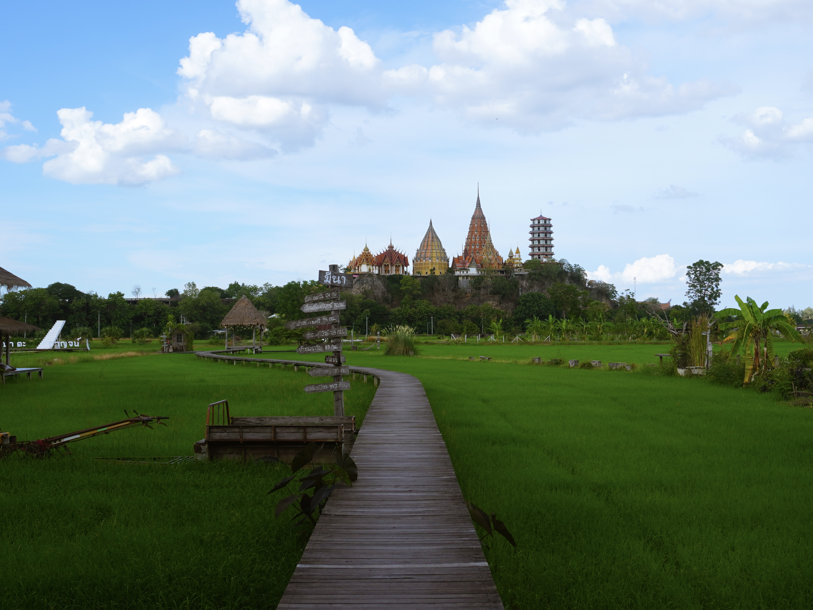
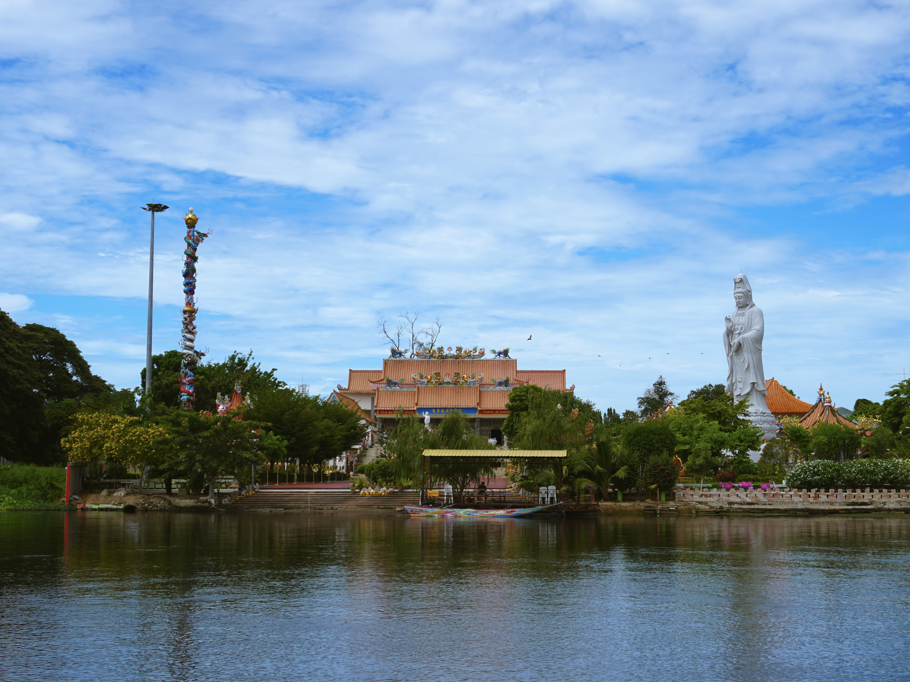
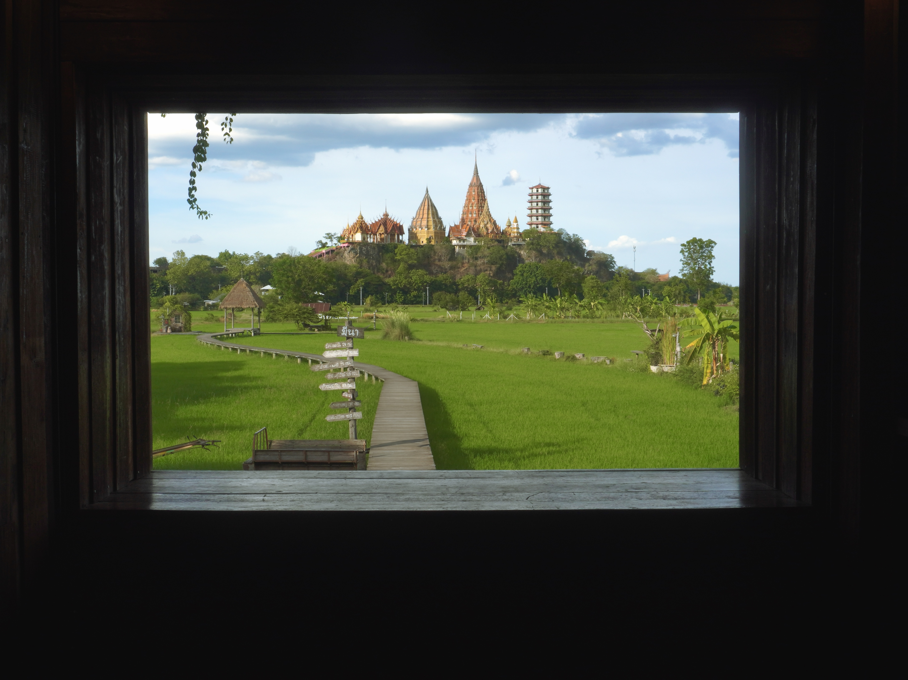
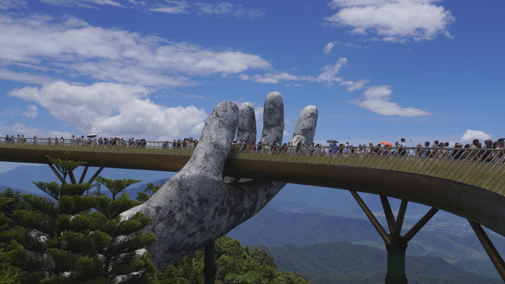
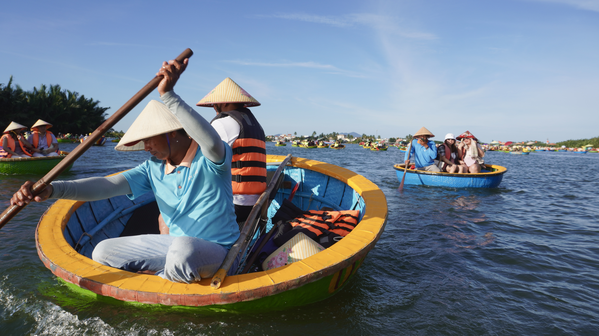
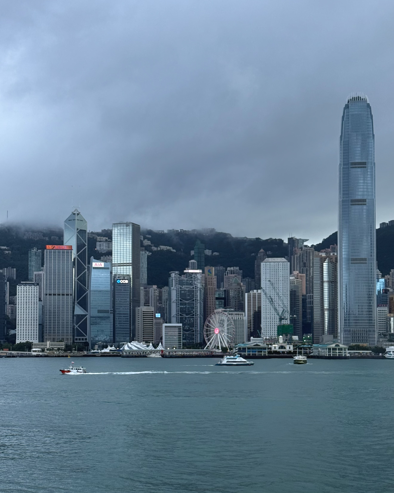
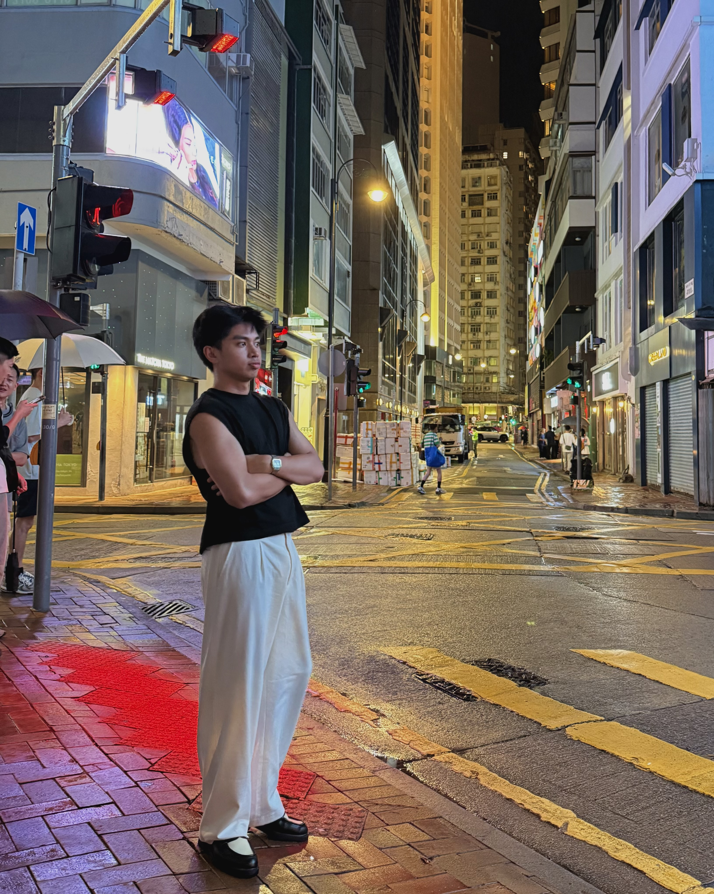
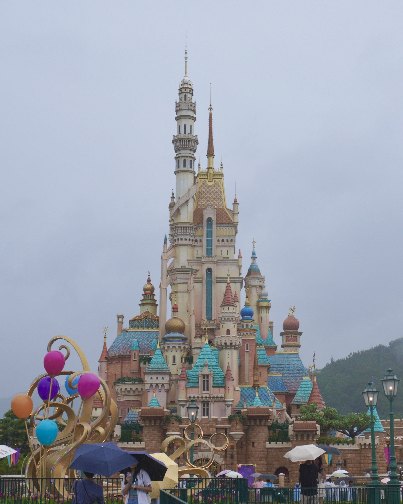
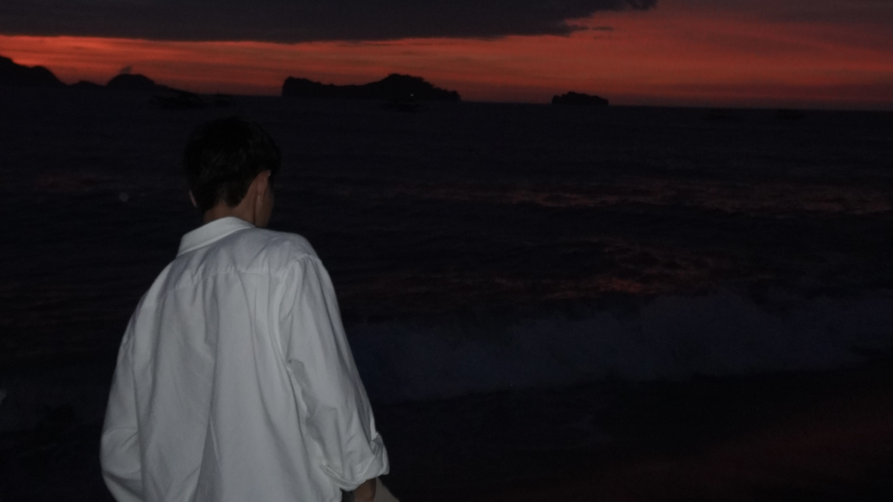
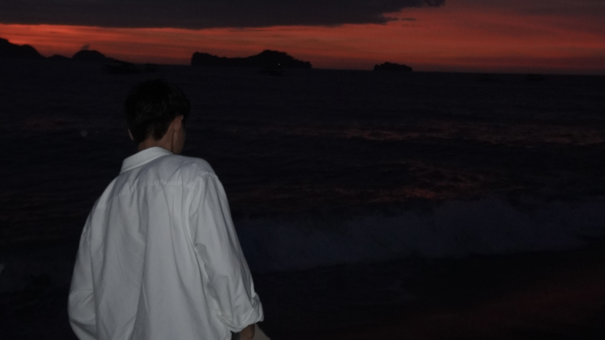

My International Travels
Thailand — First Stop: Bangkok and Beyond
  
Thailand was my first stop, and Bangkok welcomed me with its usual chaos—loud, colorful, and alive in every direction. From the moment I stepped into the city, I felt that familiar thrill of being somewhere completely different yet strangely grounding. One of my quieter moments was at Meena Café. Sitting there, surrounded by soft tones and calm energy, I took a pause from the city’s rush. It felt like a small pocket of peace where I could breathe, reflect, and simply be present. Moments like that reminded me that travel isn’t always about movement—it’s also about stillness. The contrast came quickly when I visited an elephant sanctuary. Seeing these gentle giants up close, learning their stories, and witnessing how they were cared for was humbling. It shifted something in me. There was a sense of respect and responsibility in that space, a reminder of how travel can teach empathy beyond culture and language. Of course, I couldn’t resist mixing business with curiosity. I found myself hunting for car parts—wandering through shops, negotiating, observing how things worked on the ground. It felt familiar, almost instinctive, a piece of my past following me across borders. Wat Tham Suea Temple was another kind of awakening. Standing there, surrounded by history and silence, I felt small in the best way possible. The climb, the view, the stillness—it all pushed me inward. It was a moment of reflection I didn’t know I needed. Then there was Maeklong Railway Market—raw, chaotic, and unforgettable. Watching vendors calmly pull back their stalls as a train passed inches away was surreal. Life there didn’t stop for the train; it simply adapted. That moment stayed with me, a quiet lesson in resilience and flow. Looking back, Thailand wasn’t just a destination—it was a series of contrasts. Peace and chaos, reflection and movement, purpose and curiosity. And in between all of that, I found parts of myself I didn’t even know I was looking for.
Vietnam — Hoi An Days and Da Nang Views
 

Hoi An slowed time with its lantern-lit streets and handcrafted leather goods.
After Thailand, my journey took me to Vietnam, where time seemed to move at a gentler pace—especially in Hoi An. Walking through its lantern-lit streets felt like stepping into a living postcard. I wandered without a rush, letting the colors, textures, and quiet charm of the town pull me along. Shopping for leather goods became part of that slow rhythm. I carefully chose two bags, each stitched with intention, knowing they’d carry more than just my things—they’d carry memories of this place. As night fell, I found myself by the river, holding a small lantern. Watching it drift away with dozens of others, I felt a quiet sense of release. There was something deeply symbolic about letting light float into the dark—hopes, prayers, or maybe just gratitude moving forward without needing direction. Food became my way of understanding Vietnam. I ate where locals ate, sat where conversations flowed naturally, and let flavors tell their stories. One meal that stayed with me was at Lak Luk—simple, honest, and comforting. It reminded me that the best meals aren’t always about presentation, but about how they make you feel. Of course, no visit would be complete without a coffee break. Trying Vietnam’s famous egg coffee was an experience in itself—rich, creamy, and unexpectedly smooth. Sitting there, spoon in hand, I realized how something so small could feel so memorable. Later, I stood on the Golden Bridge, hands brushing the railing as massive stone hands held the path beneath my feet. Suspended between the mountains and the sky, I felt both grounded and weightless. It was one of those moments where you stop taking photos and just stand there—fully present. Vietnam taught me to slow down. To appreciate craftsmanship, flavor, and fleeting moments. It wasn’t loud or demanding; it gently invited me to pay attention—and I did.
Hong Kong — Moving With the City
 Fast-paced and efficient, Hong Kong invited me to move with its rhythm.
From Vietnam, I found myself in Hong Kong—a city that moves fast, thinks sharp, and never really slows down. I stayed around the Times Square area, right in the middle of it all. Skyscrapers, glowing signs, endless foot traffic—everything felt efficient and intentional. My days there were simple but satisfying: walking through malls, drifting into side streets, window-shopping, and occasionally losing track of time as one place blended into the next. Hong Kong has a way of making even “just shopping” feel like an experience. What surprised me most was how the best moments weren’t planned. One day, while wandering away from the crowds, I stepped into a small local eatery—nothing flashy, just a few tables and a menu that felt well-worn. I ordered a bowl of brisket noodle soup without thinking much of it. That first bite stopped me. The broth was deep and comforting, the brisket tender and rich, the noodles perfectly simple. It wasn’t trying to impress—it just was good. Really good. Sitting there, surrounded by locals going about their day, I realized that some of the most memorable travel experiences come from trusting your instincts and following your hunger. Hong Kong didn’t ask me to slow down like Vietnam did, or reflect like Thailand. Instead, it reminded me how good it feels to be fully engaged—moving with the city, blending into its rhythm, and finding joy in the small, unexpected details. .
Hong Kong & Macau — Shared Steps and Soft Moments


Sharing Hong Kong with family softened the experience.
A few months later, Hong Kong welcomed me back—this time with my family. The city felt different when shared. The pace softened, the moments stretched longer. We spent our days doing the classics: Ocean Park for the views, the rides, and the shared laughs; Disneyland for the nostalgia, the lights, and that childlike feeling that somehow returns no matter how old you are. In between, we shopped again—wandering through familiar malls and busy streets, enjoying the simple comfort of being together in a place that already felt known. Right after Hong Kong, we crossed over to Macau. Macau carried a completely different energy. It felt slower, more reflective—layers of history tucked between modern developments. We explored the city without rushing, walking through its streets, taking in the architecture, and letting the mix of cultures speak for itself. Food became part of the experience again—trying different dishes, sitting down without an agenda, letting flavors mark time. We stayed at The Venetian, and it felt like stepping into another world. The grand halls, the canals, the endless corridors—it was easy to get lost, and honestly, that was part of the fun. From there, we explored the rest of the area—the Londoner, the Parisian, and the surrounding compounds, each place echoing a different city, a different mood. Even if I couldn’t remember all the names, I remembered how it felt: surreal, indulgent, and oddly comforting. Macau wasn’t about checking boxes. It was about slowing down, sightseeing without pressure, and enjoying the present moment with the people who mattered most. Traveling with family reminded me that sometimes the destination fades into the background, and what stays with you are the shared steps, the conversations, and the quiet joy of simply being there together.
 
